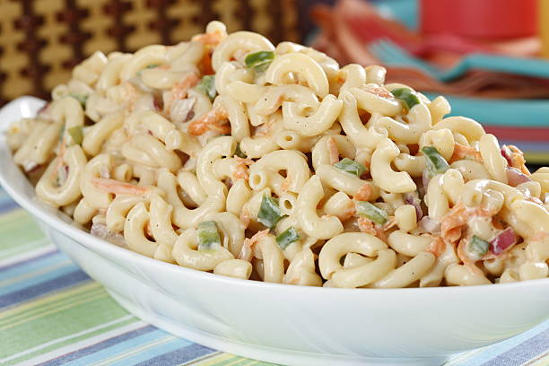

Macaroni Salad

This creamy macaroni salad with celery, onion, green pepper, carrot, and pimentos is easy to make and is the perfect crowd-pleasing dish to bring to your next picnic or potluck.
Ingredients
- 4 Cups Macaroni
- Condiments
- 1 Cup Mayonnaise
- 2 1/2 Tbsp Mustard
- 2/3 Cup White Sugar
- 1/4 Cup Vinger
- Seasonings
- 2 1/2 tsp Salt
- 1/2 tsp Ground pepeer
- Vegetables
- 2 Stalks Celery
- 1 Large Onion
- 1 Green Bell Pepper
Steps
- Gather all ingredients.
- Bring a large pot of lightly salted water to a boil. Cook macaroni pasta in the boiling water, stirring occasionally, until tender yet firm to the bite, about 8 minutes. Rinse under cold water and drain.
- Mix mayonnaise, sugar, vinegar, mustard, salt, pepper, and macaroni pasta together in a large bowl.
- Stir in celery, onion, green pepper, carrot, and pimentos.
- Refrigerate salad for at least 4 hours before serving, but preferably overnight.
Back to Home